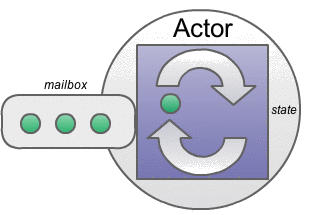

F# agents
http://litefiredark.deviantart.com/art/Secret-Agent-Man-43735368
My name is Simon and this is my face
I'm a father of and I'm from
MSc. from in distributed RT systems
I work at were we do software and BI
I'm ssboisen on  and
and  and
and 
The Premise
Number of cores have been increasing
Free lunch is over

http://www.gotw.ca/publications/concurrency-ddj.htm
Utilizing new CPUs requires parallel execution
Shared-memory multiprogramming is hard and messy
... non-trivial multi-threaded programs are incomprehensible to human.
http://img.thedailywtf.com/images/200802/deadlock.JPG
I/O-heavy reality makes async execution a must

http://blog.mixu.net/2011/02/01/understanding-the-node-js-event-loop/
We need a better programming model
Different options in handling concurrency
-
Software Transactional Memory
- Shared memory model
- Transactional like a db
- Optimistic concurrency
-
Actors
- Message passing
- Shared-nothing memory model
The Actor Model
Mathematical model of concurrent computation by Professor Carl Hewitt of Stanford University
http://people.csail.mit.edu/psz/LCS-75/Hewitt.jpg
Actors as the universal primitive of computation
Embodies processing, storage and communication
What is an actor?
Autonomous and concurrent object
that executes asynchronously

Has a mailbox through which it receives messages
The mailbox/actor has an address
What can an actor do?
Receive and process messages
Create new actors
Send messages to other actors

Designate how to handle the next message it receives
All about messages
The order of receival is not guarenteed
Each message will be delivered at most once
When only one message is being processed at a time you have implicit synchronization
F# agents
Similar to actors but not exactly the same
Built on F# asyncs and runs on the threadpool
Thousands of async agents per thread
Messages are received in order in a sender-receiver pair
Differences to Erlang, Akka and the actor model
Not distributed, the address is the identifier of the object
Messages are delivered exactly once
No built-in durable mailboxes
No built-in supervision-support
So what does it look like in F#
type CalcOperations =
| Add of int
| Subtract of int
| Total of AsyncReplyChannel<int>
let calc = MailboxProcessor.Start(fun inbox ->
let rec loop total = async {
let! msg = inbox.Receive()
match msg with
| Add(i) -> return! loop (total + i)
| Subtract(i) -> return! loop (total - i)
| Total(c) -> c.Reply(total); return! loop total
}
loop 0)
calc.Post(Add(8))
calc.Post(Subtract(3))
let total = calc.PostAndReply(fun rc -> Total(rc)) // total = 5
demo-time
references:
The Actor Model - Everything you wanted to know but were afraid to ask